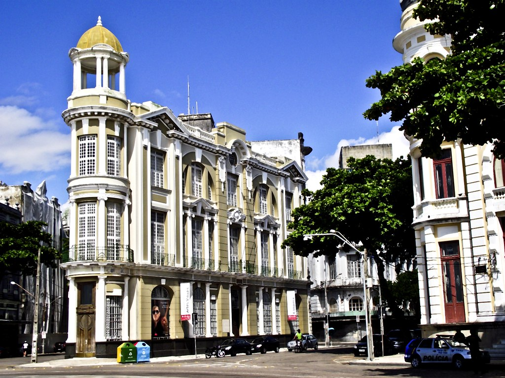
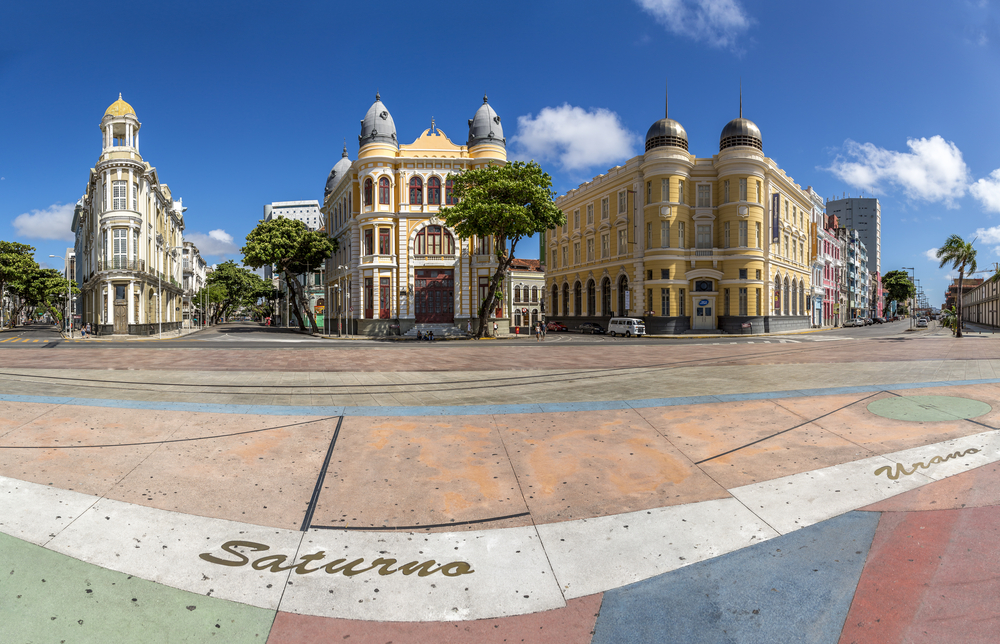
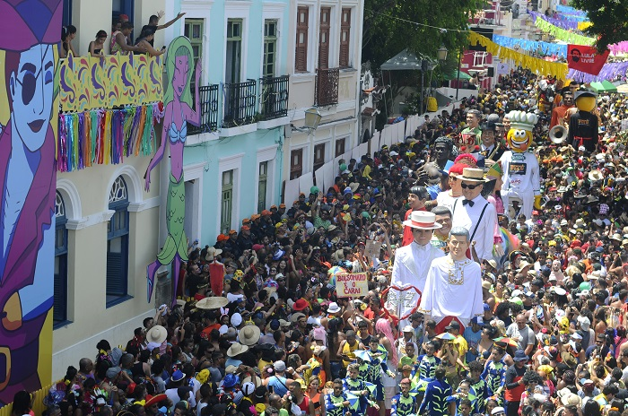
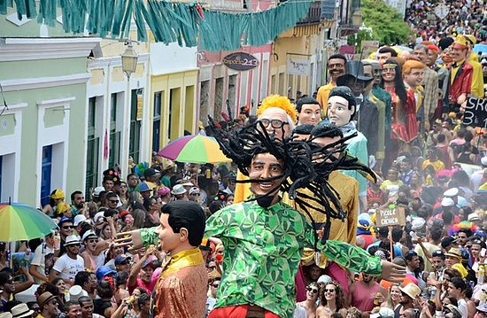
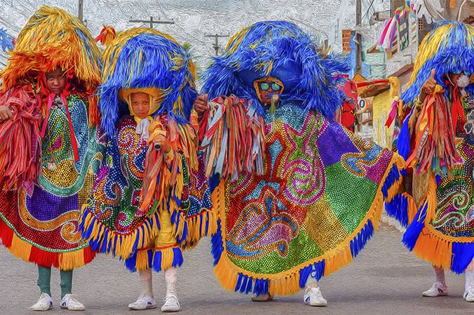

Recife - Pernambuco
Se você quer conhecer o Nordeste brasileiro, certamente você precisa conhecer Recife, capital de Pernambuco, para você começar a se planejar e a se
deslumbrar, antes mesmo de ir aos respectivos destinos.
Toda a cidade é bonita e cativante à sua maneira. No entanto, existem alguns lugares que se destacam de outros.
A melhor coisa de Recife é que é uma cidade extremamente diversa. Embora todos os estados do Nordeste estejam muito próximos, todos são completamente
diferentes em arquitetura, história, paisagens, climas e muito mais!
Principais pontos turísticos
Recife Antigo

A diversidade de atrações atrai um público bem amplo, e isso talvez seja a coisa mais legal do Recife Antigo – tem espaço pra todo mundo.
Um passeio a pé pelas atrações do Recife Antigo junta história, cultura, arte, muita música e paisagens bonitas.
Nesse post, vou te passar o meu roteiro de domingo, meu dia favorito para explorar a região, com mais opções de o que fazer no Recife Antigo.
Marco Zero
 Circular pelo Recife Antigo e conhecer o Marco Zero.
Para quem tá a fim de um passeio histórico, o centro antigo é a melhor escolha. Isso porque é ali onde
fica o Marco Zero da cidade. Ou seja: acredita-se que foi neste mesmo local onde ocorreu a fundação de Recife, assim como é a partir dele de onde se
calculam as distâncias a outros lugares. Mas a região vai além e concentra pontos turísticos e muitas construções charmosas, que remetem à época do
Brasil Colônia.
Mercado da Boa Vista

Interior do Mercado

Bem pertinho do Recife Antigo, existe o Mercado de São José é ideal para quem quer comprar presentes, já que tem no artesanato regional seu ponto forte.
Sabe o que isso significa? Que ele oferece várias opções de souvenires, como ímãs de geladeira, enfeites, redes, instrumentos musicais e até cachaças.
Praia de Boa Viagem

A Praia de Boa Viagem é famosa no mundo inteiro e, portanto, não pode ficar de fora do roteiro de ninguém!.
Principal praia urbana de Recife, uma caminhada pela orla é sempre bem-vinda. Aproveite ainda para curtir a ótima infraestrutura e para saborear os quitutes
vendidos por ambulantes, como queijo assado e caldos de peixe, camarão e feijão.
A água do mar é verdinha e quase sempre morna, mas tenha em mente as seguintes precauções: evite o mergulho na maré alta e se tiver, qualquer tipo de sangramento,
não use nenhum objeto brilhante e não se afaste da areia.
Carnaval de Olinda
 
Todos os elementos que compõem o Carnaval pernambucano só existem e resistem porque diversas pessoas dedicam suas vidas para manter as tradições carnavalescas vivas.
As fantasias coloridas, os ritmos e danças diversas, a alegria dos encontros e celebrações têm apoteose em fevereiro, mas são construídas no cotidiano durante o ano todo.
Como forma de reconhecer a dedicação à cultura, o Carnaval de Olinda e Recife homenageia todos os anos grandes expoentes da cultura popular. Em 2023, Olinda homenageia o
Maestro Oséas e Zé da Macuca (in memoriam), e Recife homenageia a passista de frevo Zenaide Bezerra, a Rainha do Maracatu Estrela Brilhante do Recife, Marivalda Maria dos
Santos, e o cantor Geraldo Azevedo. Tradição do carnaval de Olinda, os bonecos gigantes são, na verdade, do Sertão de Pernambuco.
Maracatu

O maracatu é uma manifestação do folclore brasileiro que envolve dança e música.Sua origem remonta a época do Brasil Colonial e consiste em uma mistura das culturas africana, portuguesa e indígena.
É portanto uma expressão genuinamente brasileira e foi criada no estado de Pernambuco, sendo presente, sobretudo, nas cidades de Olinda, Recife e Nazaré da Mata.